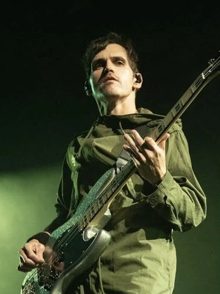
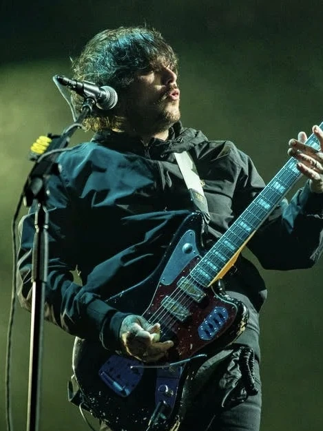
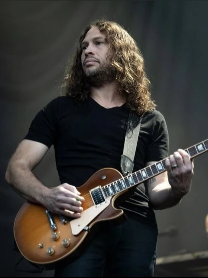

Gerard Arthur Way naci� el 9 de abril de 1977 en Summit, Nueva Jersey,
hijo de Donna Lee (de soltera Rush) y Donald Way.
Es un cuarto italiano por parte de su madre y medio escoc�s por parte de su padre.
Se cri� en Belleville,
Nueva Jersey y comenz� a cantar p�blicamente en cuarto grado,
cuando interpret� el papel de Peter Pan en una producci�n musical escolar.
Su abuela materna, Elena Lee Rush,
fue una destacada influencia creativa que le ense�� a cantar,
pintar y actuar desde muy joven.
Se ha referido a ella en entrevistas afirmando que "ella me ha ense�ado todo lo que s�".
Ella tambi�n es el tema de la canci�n "Helena".
La banda de glam metal Bon Jovi tambi�n contribuy� decisivamente a formar su amor por la m�sica durante la escuela primaria.
Vida personal
Way hab�a luchado contra el alcoholismo durante muchos a�os.
"Gerard es Gerard. Por todo lo que lo vi, la bebida de Gerard era simplemente... la bebida de Gerard" -Bryan Ross, Reprise Records.
No fue hasta que Way estaba planeando suicidarse en 2004 y admiti� haber consumido coca�na que sus compa�eros de banda decidieron que era necesario realizar cambios;
Despu�s de estar borracho durante cuatro a�os, recuper� la sobriedad por completo en s�lo 17 d�as.
Dej� la sobriedad en agosto de 2004, pero recay� en 2011; nuevamente aleccionador despu�s de que la banda se separ� en 2013.
Gerard admite en una entrevista: "Cuando miro hacia atr�s a Danger Days, veo a un hombre que hab�a vuelto a las drogas y al alcohol,
y se estaba matando de hambre, tanto como yo. Odio admitirlo, esos jeans blancos de 'Na Na Na' eran demasiado peque�os para m�.
Sab�a que no mejorar�a y creo que era una buena opci�n para que la banda se separara". En un n�mero reciente de la revista Spin,
dijo que, habi�ndose convertido en una persona m�s feliz y sinti�ndose m�s en control, ha podido disfrutar mucho m�s de la vida.
Intereses
Horror
M�sica
Historietas
Caf�
T�

Mikey
Biografia
Michael James Way (nacido el 10 de septiembre de 1980)
es el bajista de la banda de rock estadounidense My Chemical Romance,
y es el hermano menor del vocalista principal y l�der de la banda, Gerard Way.
Mikey Way naci� en Kearny, Nueva Jersey, hijo de Donna Lee (de soltera Rush) y Donald Way.
Es mitad italiano por parte de su madre y mitad escoc�s por parte de su padre.
Creci� en Belleville, Nueva Jersey con su hermano y sus padres.
Way asisti� a Belleville High School hasta que se gradu� en 1998.
Al crecer, Way y su hermano fueron influenciados por bandas como Iron Maiden,
The Misfits, Pulp, Blur y Morrissey and The Smiths.
El primer concierto al que asisti� Way fue The Smashing Pumpkins en el Madison Square Garden,
pero su deseo de tocar m�sica se inspir� en un disco en vivo en particular, Live After Death de Iron Maiden.
Vida personal
La marca registrada de Way eran sus gafas,
pero todo eso cambi� en mayo de 2006 para corregir su miop�a,
Way se someti� a una cirug�a ocular Lasik; ya no usa gafas.
Como se cita en la p�gina de Myspace de Way: "A la temprana edad de 9 a�os,
Michael James Way sufri� la aflicci�n conocida como miop�a.
Incapaz de ver cosas como la pizarra, la pantalla de cine
(o cualquier cosa a m�s de 5 pies de distancia),
el El muchacho se vio obligado a ponerse lentes correctivos.
Michael y sus lentes pasaron muchos a�os fruct�feros juntos.
Se vieron en los buenos y malos momentos. En mayo de 2006,
esta amistad se detuvo abruptamente. Los lentes de Michael llegaron a su fin.
"Tr�gicamente, mediante cirug�a ocular Lasik. Las gafas dejan atr�s a dos queridos hermanos,
Ray Ban, Paul Frank y su padre Chanel. Los horarios y fechas de visualizaci�n se anunciar�n en breve".
Intereses
Coffee
Arts & crafts
Bass playing
Comics
Horror
Unicorns
(Way y el resto de la banda have rejected this, diciendo que Mikey "odia" a los unicornios)

Frank
Biografia
Frank Anthony Iero, Jr., nacido el 31 de octubre de 1981,
es guitarrista y corista de My Chemical Romance. También
ha desempeñado varios papeles en otras bandas, incluidas
Pencey Prep, Leathermouth, Death Spells y "Frank Iero
and the Future Violents" (anteriormente "frnkiero and
the cellabration" y "Frank Iero and the Patience").
Vida personal
El 9 de marzo de 2008, Iero se casó con su novia de mucho
tiempo, Jamia Nestor, después de proponerle matrimonio durante
la grabación de The Black Parade. El 7 de septiembre de 2010,
Iero anunció en el sitio web oficial de My Chemical Romance
que él y su esposa se habían convertido en padres de gemelas
llamadas Cherry y Lily. [9]El 6 de abril de 2012, Iero anunció
en su cuenta personal de Twitter que su esposa había dado a
luz a su hijo, Miles. También ha sido declarado el mejor padre
de todos los tiempos. También tiene como nombre de perro Lois.
Iero ha expresado su postura a favor de los derechos de los
homosexuales en numerosas ocasiones, incluido el uso de una
camiseta a favor del matrimonio homosexual en la gira y su camiseta
roja personalizada en casa "La homofobia es gay", que se ha convertido
en una de las favoritas de los fanáticos. Durante los primeros años de
MCR, él y Gerard se habían besado varias veces en el escenario y brevemente
en su vídeo musical I'm Not Okay (I Promise), posiblemente como una
declaración pro-gay. También reveló a la revista Rock Sound que
votó por Barack Obama en las elecciones presidenciales de 2008.
Equipo
En los primeros días de My Chemical Romance,
Iero usaba principalmente guitarras Gibson SG
y Epiphone Les Paul (la más notable era su Les
Paul blanca apodada 'Pansy', que resultó popular
entre sus fanáticos pero que desde entonces se rompió
en el escenario) y amplificadores Marshall. Desde entonces,
pasó a utilizar Gibson Les Pauls (sin la pastilla del mástil)
y ocasionalmente utiliza una Gibson SG. También usó una
Fender Stratocaster en el video de Desolation Row.
Recientemente ha colaborado con Epiphone para diseñar
la guitarra Wilshire Phant-O-Matic que utilizó en
el escenario de la gira 'World Contamination'
de My Chemical Romance, la gira Honda Civic y
para los festivales de Reading y Leeds.

Ray
Biografia
Raymond Manuel Toro-Ortiz, nació el 15 de julio de 1977 en Kearny,
Nueva Jersey. Es de ascendencia puertorriqueña/portuguesa.
conocido profesionalmente como Ray Toro,
es el co-guitarrista principal, corista y cofundador de My
Chemical Romance desde su formación en 2001.
Vida personal
Creció en una pequeña casa en la frontera entre Kearny y Harrison,
Nueva Jersey, que compartía con sus padres y dos hermanos.
Su barrio era extraño; Toro ha mencionado que había drogadictos
sufriendo sobredosis fuera de su casa y que a menudo se encontraban
cadáveres en el parque y el lago cerca de su casa. Cuando era niño,
le gustaba jugar con su perro "Boy George", pero tendía a ser muy tímido.
Cuando ingresó a Kearny High School, había heredado la pasión
por la música de su hermano mayor, quien "siempre [tenía] una
guitarra en la casa" y estaba "tocando con ella día y noche".
Además de inspirarlo a tomar una guitarra, el hermano de Toro le
presentó varias bandas cuyos guitarristas lo influyeron mucho.
Estos guitarristas son Randy Rhoads de Ozzy Osbourne, Kirk Hammett
de Metallica, Slash de Guns N' Roses y Jimmy Page de Led Zeppelin.
Se inscribió en lecciones de guitarra, además de lecciones de
mecanografía para mejorar su destreza manual.
Heridas
Al igual que los demás miembros de la banda,
Toro ha sufrido una buena cantidad de lesiones.
Estos incluyen "quemadura de guitarra" y un gran
corte en la cabeza gracias a Iero y su guitarra.
Uno de los primeros momentos en vivo de My Chemical
Romance grabado en cinta muestra a Toro siendo golpeado
en la cara por el micrófono de Gerard Way después de que
el vocalista lo balanceó, lo que resultó en un labio
desgarrado y sangre en la nariz; Terminó yendo al hospital
y le dieron diecisiete puntos en el labio.